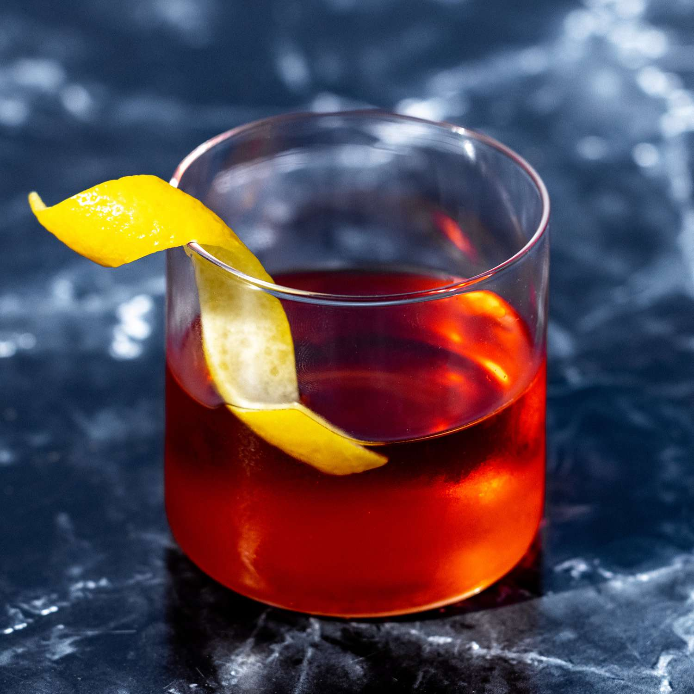

The Sazerac

Description
The sazerac is neck and neck with the hemingway as one of my favorite cocktails
I love how boozy it is and it offers many different flavor profiles if you change the base spirit to a cognac, or even a bourbon
Ingredients
- A rocks glass
- A mixing glass (or a pint glass will do)
- A bar spoon (can use anything to mix the cocktail at home)
- A cocktail strainer
- Absinthe to rinse
- 1/2 oz simple syrup
- 4 dashes peychaud's bitters
- 2 oz rye whiskey
- Lemon peel for a garnish
Steps
- Rinse a chilled rocks glass with absinthe, discarding the excess and setting the glass aside
- In your mixing glass, add the whiskey, simple syrup, peychaud's bitters, and ice
- Stir until well chilled
- Strain the cocktail into the prepared rocks glass
- Express the lemon peel over the cocktail, rub it around the rim, drop it in the drink, and enjoy!